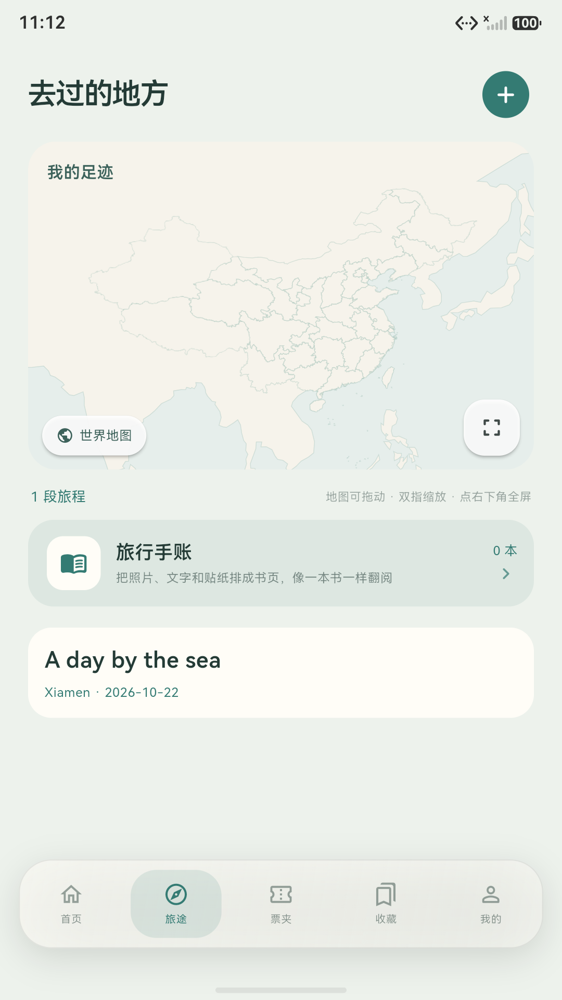
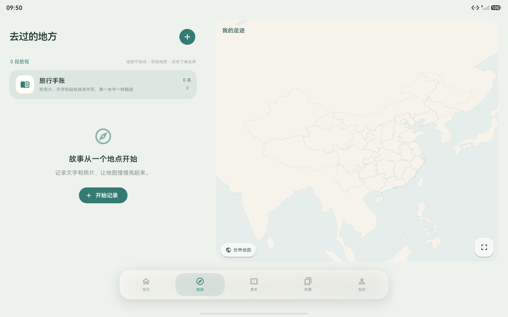

HARMONYOS
同一本记录，适应不同屏幕。
原生鸿蒙 1.0.0 工程支持手机与平板。手机纵向浏览，宽窗口采用记录与地图并排布局；地图可全屏、缩放和切换方向，保留浮动导航。


安装与发布状态
原生商店包已构建并完成签名校验，手机模拟器已验证基本记录与地图功能。目前没有可供普通用户直接安装的鸿蒙发行包。
现有 .app 用于华为应用市场上传；调试 HAP 也不作为公开安装包提供。正式安装入口会在取得对应分发条件并完成测试后开放。
查看工程与验证记录 ↗